数据来源：知识星球「南半球聊财经」星主 Jason 不跪当日发帖 当日发帖数量：14 条（时间跨度 13:20 – 15:14，美西时区）
今日要点速览
今天 Jason 一口气发了 14 条，主线可以归成四块。第一块是中国货币政策：央行二季度例会措辞明显转向，从"稳中有进"改口"向新向优"，并把"结构分化"列为新挑战，释放了下半年更积极逆周期、"7 月 PPI 见顶后可期待全面降准降息"的信号；高盛也判断人民币政策锚仍在、宽松预期升温。第二块是中国房地产与实体：上海写字楼空置率升到 24.5%、存量住宅上半年加权均价跌 4.09%（同比 -8.81%）、二手房挂牌价指数继续阴跌，武汉/长沙/郑州等中部强二线跌幅最深；伯恩斯坦还点出 5 月中国手机"量弱、价涨、库存创新高"的不健康组合。第三块是海外央行与地缘：美联储纪要偏鹰、消费信贷 8 个月来首次萎缩，新西兰联储如期加息到 2.5%，特朗普重启对伊朗制裁与打击、霍尔木兹海峡风险再起推高油价。第四块是长周期人口叙事：IMF 下调全球增长、美国人口增长因出生减死亡转负而只能靠移民支撑、盖洛普显示美国人"想生 2.7 个但只生得出 1.6 个"——这些都在为"低增长、老龄化"的长期底色做注脚。整体看，Jason 今天在用中外对照的方式，讲同一个故事：需求端偏弱、政策要托底、地缘和人口是慢变量里的大风险。
帖 1 · 15:14 · 央行二季度例会：措辞转向，下半年宽松可期 #金融
帖子原文：
银河：中国人民银行货币政策委员会召开2026年第二季度例会。本次会议的重要变化：对于外部环境，强调"复杂多变"。对于国内经济形势的判断从"稳中有进"转变为"向新向优"，并在上一次会议强调面临"供强需弱、外部冲击"问题和挑战的基础上，新增提出面临"结构分化"的问题和挑战，由双重演化为三重。释放积极的政策信号，下半年宏观政策有望更加重视新旧动能转型过程中"结构分化"带来的系列影响，实施更为积极的逆周期政策，托底经济结构转型过程中的下行风险。本次例会对于货币政策总体要求从"综合运用多种工具，加强货币政策调控"转变为"增强政策前瞻性灵活性针对性"。这意味着下一阶段的货币政策将更加强调前瞻发力并保持灵活，在宏观政策中率先发力稳就业、稳企业、稳市场、稳预期，7月PPI见顶之后可以给全面降息降准更多期待。
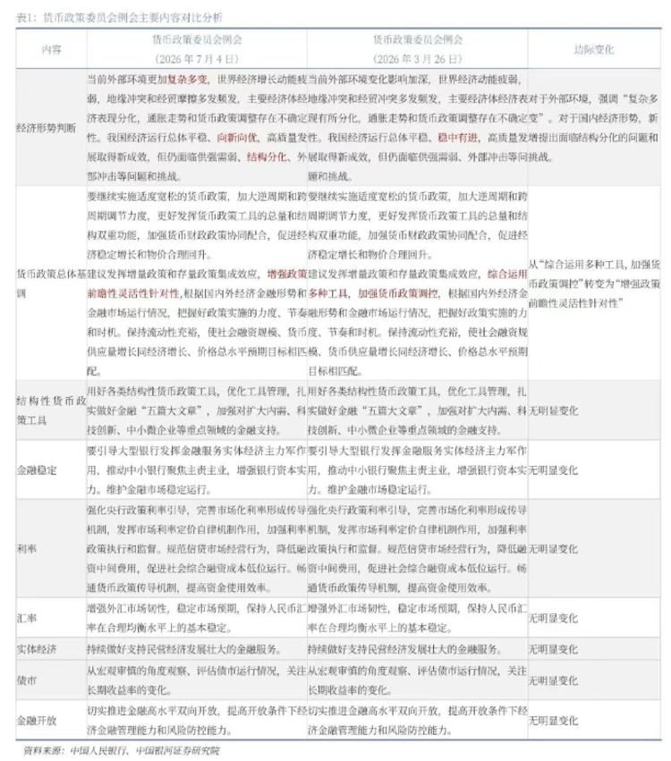
一句话核心： 央行例会通稿的措辞变了，等于官方暗示下半年货币政策会更松、更主动，市场可以对降准降息多一点期待。
背景与关键数据： 央行货币政策委员会每季度开一次"例会"，会后发一份通稿。通稿里几乎每个字都是市场逐字抠的——因为央行很少直接说"我要降息"，而是通过遣词造句的细微变化传递信号，这叫"预期管理"。这次三个关键改动：①对国内形势的判断从"稳中有进"改成"向新向优"（重心从"稳"转向"转型升级"）；②新增"结构分化"的挑战，即经济冷热不均、不同行业/地区差距拉大；③货币政策总要求从"加强调控"改成"增强前瞻性、灵活性、针对性"——"前瞻"意味着提前动手而不是被动救火。Jason 由此推断：等 7 月 PPI（生产者价格指数，衡量工业品出厂价）见顶回落后，全面降准（降低银行存款准备金率、释放可放贷资金）和降息的窗口会打开。
图片解读： 配图是银河证券做的一张"本次例会 vs 上次例会（3 月 26 日）"的逐条对照表，左栏列"经济形势判断、货币政策总基调、结构性工具、利率、汇率"等维度，中间两栏并排放两次会议原文，右栏标注"边际变化"。表中用红字高亮了变动处：经济判断栏的"向新向优""结构分化"，货币政策栏的"增强政策前瞻性灵活性针对性"。多数其他维度标注"无明显变化"，说明真正的信号就集中在措辞转向这几处。这张表的价值在于——它把"哪里变了"一目了然地摆出来，避免读者自己逐字比对。
为什么重要 / 对市场和经济的含义： 央行转向"更积极的逆周期"，对资产价格是偏正面的：利率下行利好债券（价格上涨）、也降低企业融资成本；宽松预期通常托底股市，尤其是对利率敏感的板块（地产、券商、成长股）。但对人民币汇率是双刃剑——降息会缩小中美利差、给人民币贬值压力（见帖 10 高盛的分析）。Jason 想表达的观点很清楚：政策底可能正在形成，下半年别对宽松太悲观。
延伸知识： "逆周期调节"是宏观调控的核心思路——经济过热时收紧（加息、减少财政支出）给它降温，经济偏冷时放松（降息、扩大支出）给它托底，目的是熨平经济的大起大落。可以用开车打比方：上坡踩油门、下坡带刹车，让车速平稳。与之相对的是"顺周期"（经济好时还加杠杆、差时还抽贷），那会放大波动。另一个值得记的概念是 PPI 与 CPI 的区别：PPI 是工厂端的出厂价（上游），CPI 是老百姓买东西的零售价（下游）。PPI 长期为负通常意味着工业通缩、企业盈利承压；PPI 见顶回落往往被解读为价格压力缓解、给货币宽松腾出空间。
帖 2 · 15:10 · IMF 最新全球增长预测 #经济数据
帖子原文：
IMF算命
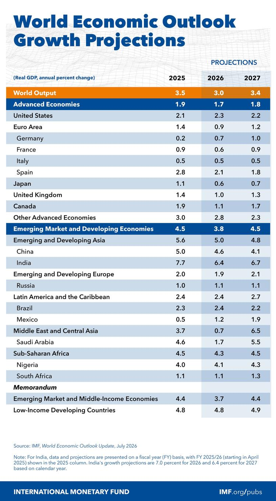
一句话核心： IMF 更新了全球经济增长预测，全球和中国的增速都被下调，Jason 用"算命"两字调侃这类预测的准头。
背景与关键数据： IMF（国际货币基金组织）每年多次发布《世界经济展望》（WEO），给各国 GDP 增速打预测，是全球最被广泛引用的官方预测之一。图中这版是 2026 年 7 月更新。核心数字：全球产出（World Output）2025 实际 3.5%，2026 预测降到 3.0%，2027 回到 3.4%；美国 2026 为 2.3%；欧元区仅 0.9%（德国 0.7%、法国 0.6%、意大利 0.5%，几乎停滞）；中国从 2025 的 5.0% 降到 2026 的 4.6%、2027 进一步到 4.1%；印度仍最快，2026 达 6.4%。
图片解读： 这是 IMF 官方风格的增长预测表，纵向按"发达经济体 / 新兴与发展中经济体"两大类逐国列出，横向三列分别是 2025 实际值、2026 与 2027 预测值。橙色高亮的"World Output"是全球总量、蓝色底纹的是大类小计。读这张表的要点：①看趋势方向（多数发达国家 2026 比 2025 走弱、2027 略回升）；②看分化（印度 6%+ vs 欧元区不足 1%，新兴市场整体明显快于发达市场）；③注意脚注——印度按财年口径统计，中东与中亚 2026 只有 0.7% 是被地缘冲突（见帖 11）严重拖累。
为什么重要 / 对市场和经济的含义： 全球增速从 3.5% 降到 3.0% 看似只差 0.5 个百分点，但放到 100 万亿美元级别的全球经济上，是上万亿美元的产出差距。增长放缓通常意味着企业盈利预期下调、大宗商品需求走弱、各国央行更倾向宽松。Jason 说"算命"，是提醒读者：IMF 预测经常在事后被大幅修正，方向参考价值大于具体小数点——别把它当精确制导，而要看它反映的"全球在减速"的大势。
延伸知识： 为什么发达国家增速普遍只有 1%–2%、新兴国家能到 5%–6%？这背后是"经济收敛（convergence）"理论：穷国起点低、有大量可模仿的现成技术和未被开发的劳动力/资本，容易实现追赶式高增长；富国已在技术前沿，只能靠原创创新一点点往前拱，天花板效应明显。中国增速从两位数一路降到 4%–5%，正是从"追赶期"进入"接近前沿期"的自然规律，叠加人口和债务因素。理解这一点，就不会对"中国增速下台阶"过度惊慌，但也要警惕：如果降速过快、超出转型能承受的节奏，就会引发帖 1 说的"下行风险"。
帖 3 · 15:09 · 盖洛普：美国人"想生 2.7 个，只生得出 1.6 个" #其他国家经济
帖子原文：
盖洛普：美国人仍然渴望更大的家庭和2.7个孩子的生育意愿，但只能实现生育率1.6。
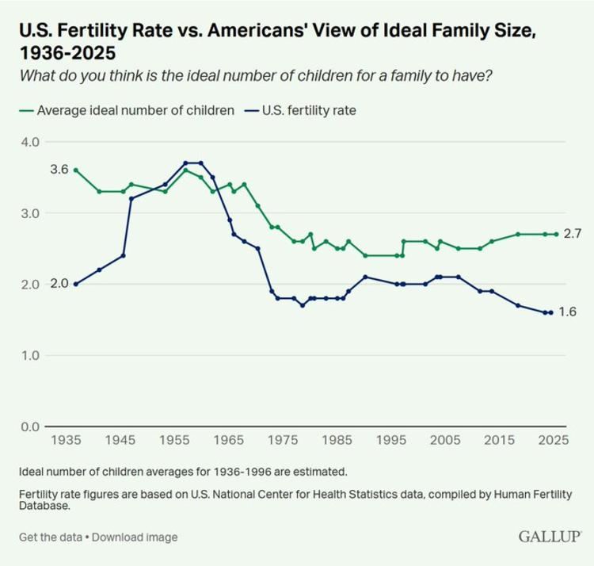
一句话核心： 美国人心里的"理想孩子数"其实一直不低（2.7 个），但实际生育率只有 1.6，理想和现实之间裂开一道大口子。
背景与关键数据： 盖洛普（Gallup）是美国老牌民调机构。它长期追踪一个问题："你认为一个家庭理想的孩子数是几个？"最新结果是平均 2.7 个。而美国实际总和生育率（TFR，一个女性一生平均生育数）只有约 1.6，远低于 2.1 的"世代更替水平"（维持人口不增不减所需的生育率）。也就是说，美国人不是"不想生"，而是"想生却生不出/不敢生"。
图片解读： 配图是盖洛普 1936–2025 年的双线图。绿线是"理想孩子数"，蓝线是"实际生育率"。两条线在 1950–60 年代婴儿潮时都冲到 3.5–3.7 的高点，之后一路下滑；关键看现在——绿线（理想）近年回升到 2.7，蓝线（现实）却一路跌到 1.6，两线之间的缺口清晰可见。这个缺口就是"想生但没生"的部分。图表传达的信号：生育率下降主要不是观念问题（人们仍向往大家庭），而是经济与现实约束（房价、育儿成本、职业压力）把意愿压了下去。
为什么重要 / 对市场和经济的含义： 生育率长期低于更替水平，意味着未来劳动力萎缩、消费人口减少、养老负担加重——这是所有发达经济体（也包括中国）共同的慢性病。它直接关联帖 5 的美国住房需求见顶、帖 2 的低增长格局。对市场而言，人口是最慢但最确定的长期变量：影响房地产、消费、医疗、养老金体系的几十年走向。Jason 连发生育率、人口、住房三帖，是在拼一幅"发达世界人口拐点"的长图景。
延伸知识： "生育意愿"和"实际生育率"的缺口，学界叫 fertility gap（生育鸿沟）。它的存在说明政策是有发力空间的——如果能通过降低育儿成本（补贴、托育、住房）把"想生"变成"敢生"，理论上能部分回补生育率。这也是为什么各国纷纷出台生育补贴。但经验（如北欧、东亚）表明：钱能缓解一部分，却很难扭转大势，因为晚婚晚育、女性教育与职业发展、城市化生活方式等结构性因素更难改变。记住一个反直觉的事实：富裕通常伴随低生育——收入越高，养育每个孩子的"机会成本"（放弃的职业收入、时间）越大。
帖 4 · 15:06 · 父母的"屏幕依赖"会伤害孩子 #心理学
帖子原文：
bloomberg：根据《心理学前沿》最新研究，父母对屏幕和智能手机的依赖可能对孩子产生负面且持久的发展和心理影响。
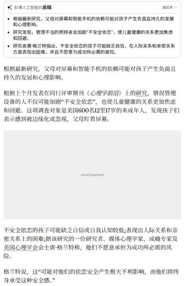
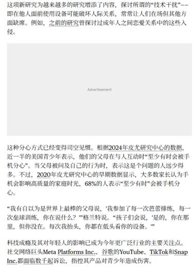
一句话核心： 不是孩子玩手机的问题，而是"家长自己老盯着手机"会让孩子缺乏安全感、形成回避型的人际关系。
背景与关键数据： 这是彭博援引同行评审期刊《心理学前沿》（Frontiers in Psychology）的一项研究。研究对象是美国约 600 名 12–17 岁的青少年。核心发现：父母对屏幕/手机的依赖（学术上叫 "technoference"，即科技干扰亲子互动）会加剧孩子的"不安全依恋"，让孩子感到被边缘化或忽视，进而在人际关系和亲密关系上表现出困难、缺乏自信。研究者、美国心理学会人士格兰特（Grant）指出，这种影响可能"对孩子的依恋安全产生大不利影响，而他们将终身承受"。
图片解读： 两张图是彭博文章的 AI 摘要 + 正文截图。第一张顶部用三个要点概括：①父母对屏幕的依赖会对孩子产生负面持久影响；②照顾不当会加剧"不安全依恋"、使孩子更焦虑回避；③孩子在人际和亲密关系上表现困难、不愿冒成功所需的风险。正文进一步说明研究样本（600 名 12–17 岁未成年人）和机制（父母盯着屏幕→孩子感到被忽视）。图片本身没有数据图表，主要是转述研究结论。
为什么重要 / 对市场和经济的含义： 这条严格说不是财经新闻，但 Jason 放进来有他的用意——它属于"社会/人口质量"的长期变量。一代人的心理健康、专注力、社交能力，最终会影响未来的劳动生产率、创新能力和社会成本（心理健康支出、教育质量）。放在今天这组"人口"帖子里，它补充的是"数量之外还有质量"的维度：不仅生得少（帖 3），成长环境也在被数字化重塑。
延伸知识： "依恋理论（Attachment Theory）"是发展心理学的基石，由 John Bowlby 提出。核心观点：婴幼儿与主要照顾者形成的情感联结，会内化成一套"内部工作模型"，影响其一生处理亲密关系的方式。依恋大致分安全型、焦虑型、回避型——安全型的孩子长大后更能信任他人、也更敢承担风险；不安全型则容易在关系里患得患失或干脆回避。研究说家长的手机依赖损害"依恋安全"，本质是在说：陪伴的"在场质量"比"在场时间"更重要，人虽在身边、注意力却在屏幕上，孩子照样会感到被忽视。
帖 5 · 15:01 · 人口弱化正在改写美国住房叙事 #其他国家经济
帖子原文：
bloomberg：在过去十年里，稀缺性是美国住房行业最强大的营销工具。但根据抵押贷款银行家协会发布的一份新白皮书，人口弱化将改变这一叙事。从2030年开始，美国的死亡人数预计将超过出生人数，这意味着如果没有移民人口将开始减少。这会开始影响住房投资的预期贴现。2020年至2025年间美国房价增长了55%，但潜在买家数量不断缩小，MBA预计2026年仅增长1%，未来两年房价将持平。哈佛大学联合住房研究中心上月发布的一项评估显示，2025年家庭增长从2021年的200万降至110万，这是连续第三年下降，年轻人更多与室友同住或与家人同住，而非独自买房。
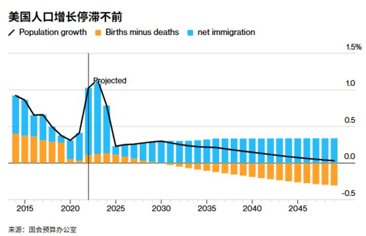
一句话核心： 支撑美国房价十年上涨的"房子稀缺"故事快讲不下去了——因为买房的人口本身在见顶回落。
背景与关键数据： 美国抵押贷款银行家协会（MBA）的白皮书提出一个拐点：从 2030 年起，美国死亡人数将超过出生人数（自然增长转负），届时人口能否继续增长，全靠移民。关键数字链条：2020–2025 房价累计涨 55%；但潜在买家在缩小，MBA 预计 2026 房价只涨 1%、未来两年基本持平；哈佛联合住房研究中心数据显示，新增家庭数（household formation）从 2021 的 200 万降到 2025 的 110 万，连续三年下降——年轻人更多合租或跟父母住，而非独立买房。
图片解读： 配图是彭博"美国人口增长停滞不前"的柱线组合图（2015–2048）。橙色柱=出生减死亡（自然增长），蓝色柱=净移民，黑线=总人口增长率。读图要点：早年橙色柱还是正的（出生多于死亡），2022 前后因某些因素冲高又回落；关键转折在 2030 年前后，橙色柱转为负值并越来越深（死亡持续超过出生），此后人口增长几乎完全靠蓝色的净移民在撑；黑线（总增长率）一路下行，到 2048 逼近零甚至转负。这张图把"没有移民、美国人口就要萎缩"的判断可视化了。
为什么重要 / 对市场和经济的含义： 住房是美国经济的压舱石（涉及建筑、按揭、家电、家具、地方税收）。如果买家人口见顶，"房价永远涨"的信念会松动，长期投资回报预期下修——这就是原文说的"影响住房投资的预期贴现"。同时它把移民政策抬到了经济核心位置：移民不再只是政治议题，而是决定房价、劳动力、增长的关键变量。对投资者，这意味着对美国住房相关资产（REITs、建筑股、按揭）要用更长的眼光看需求端风险。
延伸知识： "预期贴现（discounting future expectations）"是资产定价的核心。任何资产的价格，本质是它未来能带来的所有现金流/收益，按一个折现率折算到今天的总和。房子的价值 = 未来租金/增值预期的现值。当市场相信"未来买家越来越多、房价会涨"，就会给出高估值；一旦人口叙事逆转、未来需求预期下调，同样的房子今天的合理价格就会下移——哪怕当下供需还没恶化。这解释了为什么"预期"本身就能移动价格。另一个概念是 household formation（家庭户数形成）：真正驱动购房/租房需求的不是总人口，而是"新组建的独立家庭数"。年轻人合租、啃老，会让家庭户数增长远慢于人口增长，需求因此被推迟。
帖 6 · 14:51 · 美联储纪要偏鹰 + 消费信贷罕见萎缩 #其他国家经济
帖子原文：
zerohedge：美联储会议记录显示，"少数"委员认为6月加息有理由，总体强调了对通胀更鹰派的态度。另外要注意的是，美联储更新了5月的消费信贷数据，自2024年11月以来的首次意外萎缩。
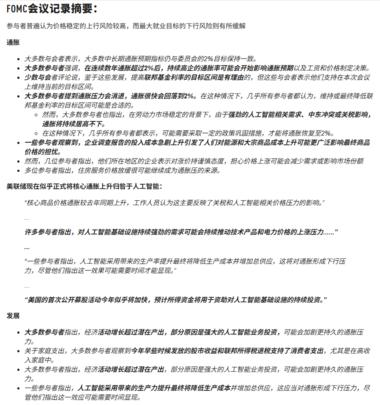
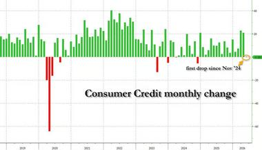
一句话核心： 美联储的会议纪要透露出更强的"防通胀、可能加息"倾向，但同时美国消费信贷 8 个月来首次萎缩，暗示消费者已经开始收紧钱袋子——两个信号有点矛盾。
背景与关键数据： 美联储每次议息会议后约三周会公布"会议纪要（minutes）"，披露委员们讨论的细节。这份纪要显示"少数（a few）"委员认为 6 月有加息理由，整体基调对通胀更鹰派（hawkish＝倾向收紧货币）。同时，5 月消费信贷数据出现自 2024 年 11 月以来的首次萎缩——即居民信用卡/消费贷款余额环比减少，这是 8 个月来头一遭。
图片解读： 第一张是纪要的中文翻译摘要，逐条列出委员对"通胀风险、就业、AI 对生产率与电力价格的影响"等的讨论，多处强调对通胀保持警惕、以及关注 AI 基础设施投资带来的持续性用电与价格压力。第二张是 zerohedge 的"消费信贷月度变化（Consumer Credit monthly change）"柱状图：长期以绿柱（正增长）为主，2020 年疫情时有一根深红大跌，近年零星几根红柱；图中右侧特别标注了一根红柱 "first drop since Nov '24"（2024 年 11 月以来首次下降）。这根红柱就是本帖的重点——消费者主动或被动地在减少借贷消费。
为什么重要 / 对市场和经济的含义： 这是一组"矛盾信号"。纪要偏鹰（想防通胀、甚至加息）会推高利率预期、压制风险资产；但消费信贷萎缩说明需求端已经在降温，如果消费真的走弱，通胀会自然回落，那加息就未必必要。市场要在"通胀黏性 vs 需求转弱"之间做判断。对资产：如果加息预期升温，利率敏感的成长股、黄金短期承压；但若消费数据持续走弱，又会强化"衰退→降息"的另一条剧本。Jason 把两张图并列，正是提醒读者别只听央行嘴上的鹰派，也要盯着老百姓实际的花钱行为。
延伸知识： "鹰派（hawkish）vs 鸽派（dovish）"是理解央行的基础黑话。鹰派＝更担心通胀、倾向加息/收紧（像鹰一样警觉凶悍）；鸽派＝更担心增长和就业、倾向降息/宽松（像鸽子一样温和）。同一位官员在不同时期可能变鹰变鸽。另一个值得记的是 消费信贷（consumer credit）作为领先指标：它反映居民对未来收入的信心——愿意借钱消费说明乐观，主动去杠杆（还债、少借）往往是消费和经济走弱的早期信号，比 GDP 这种滞后数据更早"报警"。
帖 7 · 14:43 · 摩根士丹利 3Q26 大宗价格展望：看多铜/铀/黄金 #金融
帖子原文：
摩根斯坦利：今年金属价格走势已经不像2025年那样高度受宏观统一驱动，而是变得更加"个体化"。商品市场现在最敏感的宏观变量是美国利率。对于第三季度大宗商品价格展望，最看好：COMEX铜、铀、黄金、LME铜、动力煤，最谨慎：铁矿石、铝、钯、硬焦煤。 黄金预测为：3Q26：4,200美元/盎司、4Q26：4,450美元/盎司、2026年均价：4,509美元/盎司、2027年均价：4,975美元/盎司
（附件：The Price Deck – 3Q26_ Micro Narratives, But Macro Matters.pdf）
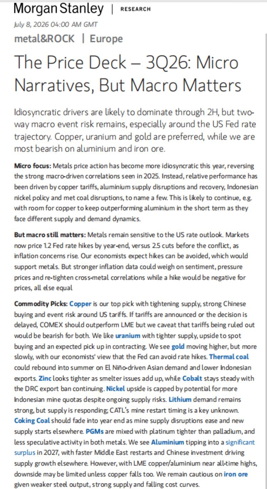
一句话核心： 大摩认为今年金属价格更多由各自的供需故事驱动（而非宏观一刀切），三季度最看好铜、铀、黄金，最谨慎铁矿石和铝；黄金 2027 均价上看近 5000 美元。
背景与关键数据： 摩根士丹利（Morgan Stanley）的季度大宗商品报告，标题就叫"Micro Narratives, But Macro Matters"（微观叙事主导，但宏观仍重要）。核心判断：2025 年金属受宏观统一驱动（相关性高），2026 年转为"个体化"——铜受关税、铝受供应扰动与恢复、镍受印尼政策、焦煤受矿难扰动各自影响。最敏感的宏观变量是美国利率。具体黄金预测：3Q26 每盎司 4,200 美元、4Q26 4,450、2026 全年均价 4,509、2027 均价 4,975 美元。 看多：COMEX 铜、铀、黄金、LME 铜、动力煤；谨慎：铁矿石、铝、钯、硬焦煤。
图片解读： 配图是大摩报告首页（2026 年 7 月 8 日）。开篇摘要写明"特殊性驱动因素料主导下半年，但双向宏观事件风险仍在，尤其围绕美联储利率路径；偏好铜、铀、黄金，对铝和铁矿石最看空"。正文分三段："Micro focus"讲价格越来越受各自供需驱动；"But macro still matters"点出市场现在计价"年底加息 1.2 次"（冲突前是降息 2.5 次），通胀担忧上升；"Commodity Picks"逐个金属给观点——铜是首选（供应收紧+中国买盘+美国关税事件风险）、铀（供应趋紧）、黄金（缓慢走高，因经济学家认为美联储能避免加息）、动力煤、锌、钴等。图片信息量大，本质是把上面文字判断的完整逻辑链摊开。
为什么重要 / 对市场和经济的含义： 大宗商品是宏观的"体温计"。大摩看多黄金到近 5000 美元，反映对"避险需求+地缘风险+潜在货币宽松"的综合判断（呼应帖 11 的伊朗地缘、帖 6 的利率不确定）。看多铜/铀则押注电气化、AI 数据中心用电、供应约束这些结构性主题；看空铁矿石/铝，是因为钢铁产量走弱、供应过剩。对用户跟读的意义：这份报告是把"利率、地缘、供需"如何具体传导到商品价格的绝佳案例。注意 Jason 只是转述卖方观点，不构成任何操作建议。
延伸知识： "宏观驱动 vs 个体化（idiosyncratic）驱动"是理解资产相关性的关键。当宏观因素（比如美元、美联储）主导时，各类商品/股票会"同涨同跌"，相关性高、分散化效果差；当市场回归各自基本面时，相关性下降、选品（selection）比择时更重要。大摩说金属从"宏观统一"转向"个体化"，对交易者意味着——今年拼的是谁更懂每个品种的供需细节，而不是押一个大方向。另一个概念是"期货价格 deck"：卖方机构对未来各季度价格的预测表，用于给相关股票（矿业公司）估值和给客户做套保参考。记住黄金的特殊性：它几乎不产生现金流，定价主要靠实际利率（利率越低、持有黄金的机会成本越小、金价越有支撑）和避险情绪，所以它对"美联储会不会加息"格外敏感。
帖 8 · 14:28 · 花旗：新西兰联储加息到 2.5%，但空间有限 #其他国家经济
帖子原文：
花旗：新西兰联储周三如预期把OCR加到2.5%，态度偏鹰，认为通胀风险仍高、当前利率仍偏宽松；但我们认为新西兰经济承受不了太高利率，本轮最多再加一次25bp，终点利率大概率在2.75%。新西兰联储强调中性利率在3%，但我们觉得中性利率更接近 2.5%—2.75%。RBNZ的nowcast实时估算显示，二季度经济大致持平。表决观察上，外部委员偏鹰，RBNZ内部工作人员相对偏鸽。这种张力意味着，本轮加息周期不太可能拉得很长。因为如果要连续大幅加息，需要委员会内部有很强共识；但目前看，大家对通胀风险和经济承受能力并没有完全一致。当前更深层的问题是：在经济仍处于恢复阶段、劳动力市场仍然宽松的情况下，企业到底还能把多少成本转嫁给终端消费者？这是判断新西兰通胀和利率路径的关键。如果企业还能顺利涨价，RBNZ会继续加息。如果消费者承受不了，需求被压下去，企业涨价失败，那么通胀会回落，RBNZ加息空间就很有限。短期看，加息和偏鹰表态对纽元有支撑。但如果市场接受花旗的判断，也就是终点利率只有2.75%，那么纽元上行空间可能有限。
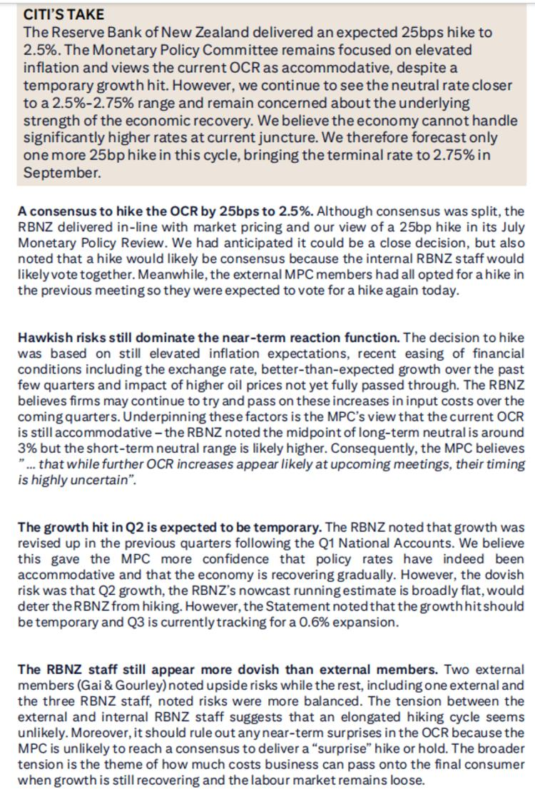
一句话核心： 新西兰央行加息到 2.5% 且嘴上偏鹰，但花旗认为经济扛不住高利率，这轮最多再加一次、到 2.75% 就到顶，所以纽元上涨空间有限。
背景与关键数据： OCR（Official Cash Rate）是新西兰联储（RBNZ）的政策利率。本次如期加 25 个基点（bp，1bp=0.01%）到 2.5%。RBNZ 认为通胀风险仍高、当前利率仍"宽松"（低于中性）；但花旗判断经济脆弱，预计终点利率（terminal rate）2.75%，即最多再加一次。双方对"中性利率"的估计有分歧：RBNZ 认为约 3%，花旗认为 2.5%–2.75%。RBNZ 的 nowcast（实时估算）显示二季度经济大致持平。表决呈现张力：外部委员偏鹰、内部工作人员偏鸽。
图片解读： 配图是花旗研究报告的"CITI'S TAKE"及正文截图（英文）。顶部灰框摘要重申：RBNZ 如期加息 25bp 到 2.5%，委员会仍聚焦高通胀、视当前 OCR 为宽松，但花旗看中性利率接近 2.5%–2.75%、认为经济承受不了明显更高的利率，故预计本轮仅再加一次、9 月到 2.75% 终点。下面几段小标题清晰：加息符合市场与花旗预期；近端反应函数仍偏鹰；二季度增长走弱被视为暂时（三季度料 +0.6%）；RBNZ 内部工作人员比外部委员更鸽。核心逻辑就是"嘴鹰、但手软"。
为什么重要 / 对市场和经济的含义： 新西兰是"小型开放经济体"的典型样本，它的央行如何在"防通胀"和"保增长"之间走钢丝，对理解全球央行处境很有代表性。对汇率：加息通常利好本币（纽元），但如果市场相信利率很快见顶，利多就被提前消化，纽元上行有限——这是"预期已被 price in（计入价格）"的经典案例。花旗抛出的深层问题——"企业还能把多少成本转嫁给消费者"——其实是全球通胀能否持续的钥匙，也和帖 9 中国手机"想涨价但卖不动"是同一个议题。
延伸知识： "中性利率（neutral rate，又称 r-star / r*）"是货币政策里最重要也最玄的概念之一：它是指既不刺激也不抑制经济的那个"刚刚好"的利率水平。央行把实际利率定在中性之上＝收紧（踩刹车），之下＝宽松（踩油门）。问题是中性利率看不见摸不着，只能估算，所以 RBNZ 说 3%、花旗说 2.5%–2.75% 的分歧，直接决定了"现在到底还算不算宽松、该不该继续加息"。另一个关键词是"终点利率（terminal rate）"，指一轮加息/降息周期的最终落点——市场交易的往往不是"这次加不加"，而是"最终加到哪、什么时候停"，因为那才决定债券和汇率的长期定价。
帖 9 · 14:16 · 伯恩斯坦：中国手机"量弱、价涨、库存新高"的不健康组合 #经济数据
帖子原文：
伯恩斯坦：5月中国智能手机市场出现三个关键信号，1）销量弱，2）均价大涨，3）库存创历史高位；这不是一个健康组合。分价格看，压力非常清楚：低端机，低于2000元：销量同比下降 38%；中端机，2000—5000元：销量同比下降 17%；高端机，高于5000元：销量同比仅下降 4.5%。这说明手机市场的下滑，不是均匀下滑，而是低端需求被成本和涨价直接打穿。这和白酒、电商、汽车其实是同一类问题：价格看起来撑住了，但量没了。当居民收入预期不强时，手机涨价不会自动带来消费升级，而可能带来换机延后。安卓厂商现在很尴尬：低端机涨价卖不动，渠道库存又高，但内存成本太高，毛利太薄，甚至可能亏损，所以618也不敢大幅打折。不过苹果在618期间更加激进。5月15日，苹果将 iPhone 17 Pro 降价 1000元人民币，叠加国家补贴后，iPhone 17 Pro价格首次低于 7000元。苹果主要集中在6000元以上旗舰市场，但这个旗舰市场规模并没有明显扩大。意味着苹果的下沉，会对国产品牌增加压力。
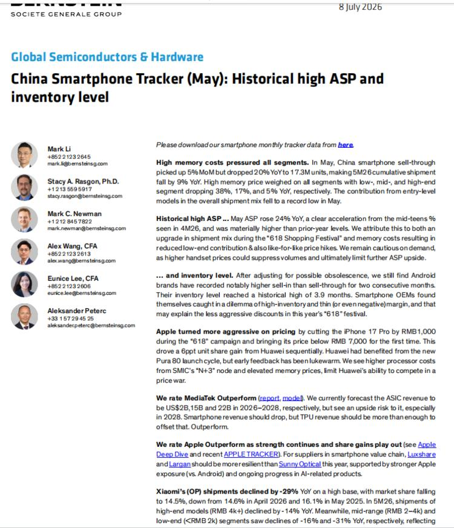
一句话核心： 5 月中国手机卖得少、均价却涨、库存还创新高——低端需求被涨价"打穿"，反映的是居民不敢花钱，苹果趁机降价下沉挤压国产品牌。
背景与关键数据： 伯恩斯坦（Bernstein，法兴集团旗下研究机构）的中国智能手机月度追踪。5 月三个信号：销量弱、均价（ASP，Average Selling Price）大涨 24% 同比、库存创历史高位（约 3.9 个月）。分价位看销量同比：低端（<2000 元）跌 38%、中端（2000–5000 元）跌 17%、高端（>5000 元）仅跌 4.5%——越便宜的机子跌得越惨。原因是内存（存储芯片）成本高企，厂商被迫涨价，但收入预期弱的消费者不接受，直接推迟换机。苹果 5 月 15 日把 iPhone 17 Pro 降价 1000 元，叠加国补后首次跌破 7000 元，主动下沉抢份额。
图片解读： 配图是伯恩斯坦研报首页（2026 年 7 月 8 日），标题"China Smartphone Tracker (May): Historical high ASP and inventory level"（历史高位的均价与库存）。正文分段：高内存成本压制所有价位段（低/中/高端销量分别跌 38%/17%/5%）；均价同比涨 24%、创历史高，因高端占比上升和同款涨价；库存调整后达 3.9 个月历史高位，安卓厂商陷入"高库存+薄利"两难，所以 618 不敢大促；而苹果把 iPhone 17 Pro 降 1000 元、跌破 7000 元，更激进。报告还给出评级观点（看好 MediaTek 联发科、看好苹果供应链）。图片是纯文字研报，无图表。
为什么重要 / 对市场和经济的含义： Jason 点出的类比很精辟——手机和白酒、电商、汽车是"同一类问题：价格撑住了，但量没了"。这是判断中国内需的关键切口："价稳量跌"往往是需求疲软的伪装，因为结构变化（低端消失、只剩高端在买）会把平均价格推高，掩盖真实的需求萎缩。这直接呼应帖 1 央行说的"结构分化"和"稳市场稳预期"。对市场：利空依赖低端走量的国产手机品牌与相关供应链，利好高端化受益者（苹果、其供应链、联发科），也提示存储芯片涨价这条产业链逻辑。
延伸知识： ASP（平均售价）是个容易骗人的指标，要警惕"结构效应（mix effect）"。当低价产品销量崩塌、只剩高价产品在卖，平均价格会"被动"上涨，看起来像"消费升级"，实际是"低端消费者退场"。判断真实景气度，要把"量"和"价"拆开看，甚至看销量的价位分布。这个方法可以迁移到任何行业——比如楼市"均价没跌"可能只是因为便宜的房子没人买、成交集中在改善型豪宅。另一个概念是"渠道库存（channel inventory）"：厂商把货压给经销商不等于卖给了消费者，库存高企意味着未来要么降价去库存、要么减产，是景气见顶的预警信号。
帖 10 · 14:08 · 高盛：人民币在美元走强下仍有韧性，宽松预期升温 #金融
帖子原文：
高盛：中国经济增长压力在上升，但市场对"大水漫灌式宽松"的预期仍不强；人民币虽然面对美元走强和中美利差扩大，6月美元指数 DXY 大约上涨 2%，而人民币兑美元贬值幅度有限。这说明：人民币背后的政策稳定锚仍然存在；CFETS人民币指数在6月反而上涨约 2%。EUR/CNY 越来越受到投资者关注，因为市场上做空欧元、买入离岸人民币的动能上升。中国债券利率会维持低位，但长端收益率下行空间有限，收益率曲线可能继续偏陡。
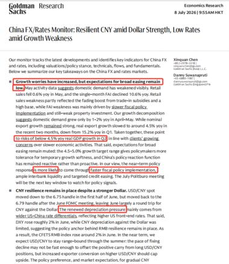
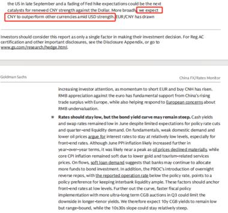
一句话核心： 6 月美元走强，但人民币兑美元没怎么贬、对一篮子货币反而升值，说明央行的"稳汇率锚"还在；同时增长压力上升、市场开始押注更多宽松。
背景与关键数据： 高盛的中国外汇/利率监测。核心事实：6 月美元指数（DXY，衡量美元对一篮子主要货币）涨约 2%，且中美利差扩大（美国利率相对更高，理论上资金会流向美元、压人民币），但人民币兑美元贬值幅度有限；更关键的是 CFETS 人民币指数（人民币对一篮子贸易伙伴货币的加权汇率）6 月反而涨约 2%。这说明人民币的"政策稳定锚"仍在。高盛还提到 EUR/CNY（欧元兑人民币）关注度上升，因"做空欧元、买离岸人民币"的动能增强；判断中国债券利率维持低位，但长端下行空间有限，收益率曲线可能继续偏陡（steepening）。
图片解读： 配图是高盛研究报告截图（2026 年 7 月 8 日），标题"China FX/Rates Monitor: Resilient CNY amid Dollar Strength, Low Rates amid Growth Weakness"（美元走强下人民币仍具韧性，增长疲软下利率维持低位）。正文用红框高亮了几处关键判断：增长担忧上升、但广泛宽松预期仍偏低；二季度 GDP 增速有跌破 4.5% 的风险，客户的宽松预期在升温、央行更可能通过流动性和定向宽松回应；美元走强下人民币仍稳（USD/CNY 在 6.75–6.79 窄幅波动），但美元走强、中美利差扩大带来的贬值压力"更多通过预期"体现。第二张图是配套的汇率/利差走势图，直观展示人民币兑美元的窄幅稳定与一篮子指数的相对强势。
为什么重要 / 对市场和经济的含义： 汇率是观察政策意图的窗口。人民币在美元走强时仍稳、对一篮子还升值，说明央行有意维稳、不希望汇率大幅波动——这既是信心信号，也是宽松空间的约束（大幅降息会加大贬值压力，见帖 1 的双刃剑）。"收益率曲线偏陡"（短端利率低、长端相对高）通常反映市场对短期宽松、长期增长/通胀回升的组合预期。对投资者：稳汇率利好人民币资产的外资持有意愿；债市短端受宽松预期支撑，但长端空间有限提示久期风险。
延伸知识： 理解人民币要区分两个价：USD/CNY（对美元双边汇率） 和 CFETS 一篮子指数（对多币种加权）。有时人民币对美元贬、但因为美元对所有货币都在涨，人民币对一篮子反而升——这时说"人民币贬值"就片面了。央行近年更看重一篮子稳定。另一个概念是"利率平价（interest rate parity）"：理论上两国利差会通过汇率变动来抵消，利率高的货币会预期贬值。中美利差扩大却没让人民币大贬，说明有"政策锚"在对抗市场力量。最后记住"收益率曲线（yield curve）"的形状含义：陡峭化（长端比短端高得多）通常预示宽松或经济复苏预期，倒挂（短端高于长端）常被视为衰退前兆。
帖 11 · 13:52 · 特朗普重启对伊朗打击，霍尔木兹风险再起 #金融
帖子原文：
zerohedge：特朗普表示，美国可能会对伊朗发动进一步打击，并可能恢复对该国港口的封锁。美国一夜之间取消了对伊朗销售石油的制裁豁免，目前多达6300万桶伊朗原油正在运输中或闲置在油轮中，周三，油价连续第二天上涨，人们对霍尔木兹海峡能源流动的新担忧再次引发。北约秘书长马克·吕特在峰会上盛赞美国新一轮对伊朗打击绝对有必要，媒体认为这是在讨好特朗普，同时特朗普想要切断和西班牙的所有贸易联系。一定程度上，特朗普的态度也来自于美国人对欧盟的质疑：你连自己都保护不了，以后也保护不了美国。
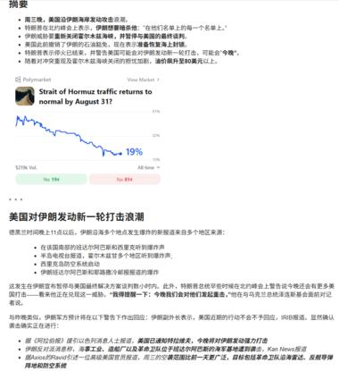
（本帖共附 9 张新闻/推文截图，其余见
jason_images/2026-07-08/post11_img2.jpg~post11_img9.jpg）
一句话核心： 特朗普扬言进一步打击伊朗、可能封锁港口并取消对伊石油制裁豁免，霍尔木兹海峡供应中断的担忧推高油价。
背景与关键数据： 事件核心：美国取消对伊朗销售石油的制裁豁免，据报有多达 6300 万桶伊朗原油正在海上运输或闲置在油轮中；油价连续第二天上涨。市场担心的焦点是霍尔木兹海峡（Strait of Hormuz）——全球约五分之一的石油海运要经过这条狭窄水道，一旦被封锁或军事化，油价会剧烈飙升。同时地缘外溢：北约秘书长吕特为美国打击背书（被解读为讨好特朗普），特朗普还放话要切断与西班牙的贸易联系，背后是美国对欧盟"自保能力"的不满。
图片解读： 首图（post11_img1）是一张综合截图：上半部分是 zerohedge 风格的事件摘要（美国当晚可能对伊朗发动打击、取消对伊石油豁免、6300 万桶原油在途、油价上涨等要点）；下半部分嵌了一张 Polymarket 预测市场的走势图——问题是"霍尔木兹海峡通行能否在 8 月 31 日前恢复正常？"，图中"Yes"概率已跌到 19%（意味着市场押注海峡短期难以恢复正常、局势偏紧张）。其余 8 张（img2–img9）是支撑该叙事的新闻标题、官员表态、油轮/油价相关推文截图，共同拼出"美伊冲突升级、能源通道受威胁"的图景。
为什么重要 / 对市场和经济的含义： 地缘冲突是油价最直接的催化剂，而油价又是全球通胀的源头之一。霍尔木兹风险升温会：①推高原油和能源股；②强化通胀黏性、让央行更难降息（呼应帖 6 美联储偏鹰、帖 7 大摩说市场从"降息 2.5 次"改为"加息 1.2 次"）；③利好黄金等避险资产（呼应帖 7 看多黄金）。Polymarket 只给 19% 概率认为海峡会很快恢复正常，说明市场把地缘风险看得较重。对用户：这是一个"地缘→油价→通胀→利率→各类资产"完整传导链的鲜活案例。
延伸知识： "预测市场（prediction market）"如 Polymarket，是让人们用真金白银对未来事件下注的平台，其价格可直接读作"事件发生的概率"（比如 Yes 报价 0.19＝市场认为 19% 概率）。它的好处是把分散的信息和判断汇总成一个实时概率，常比民调或专家更灵敏，因为下注者有真金白银的激励去求准。但也有局限：小众市场流动性差、易被操纵，极端事件容易高估或低估。另一个必知概念是"风险溢价（risk premium）"：地缘紧张时，油价里会包含一块"怕断供"的溢价，即便实际供应还没减少，价格也会先涨——一旦风险解除，这块溢价会快速回吐，所以地缘驱动的油价往往大起大落。
帖 12 · 13:28 · CBRE：上海写字楼空置率升至 24.5% #经济数据
帖子原文：
CBRE：受新增供应集中入市影响，上海全市办公楼空置率同比上升2.1个百分点至24.5%。上半年全市租金报价较2025年年底下降1.7%，有效租金则下降4.6%。
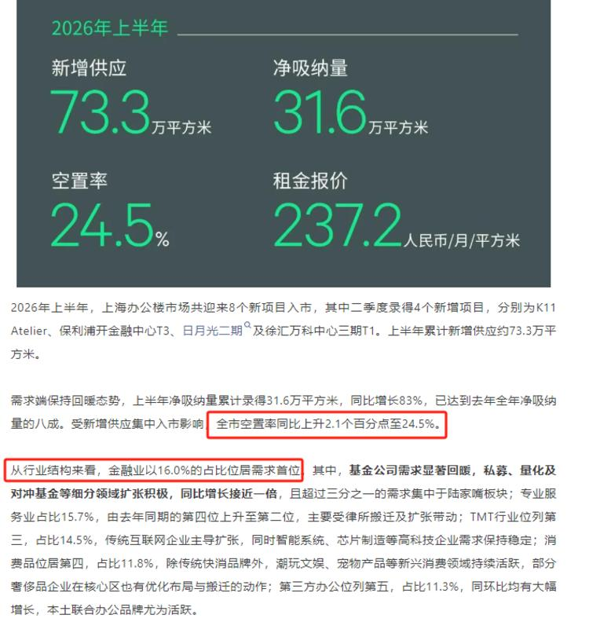
一句话核心： 上海写字楼因为新楼盘集中交付，空置率升到 24.5%，租金也在跌——商业地产供过于求。
背景与关键数据： CBRE（世邦魏理仕，全球最大商业地产服务机构之一）的上海办公楼市场数据。2026 上半年：新增供应 73.3 万平方米（二季度就有 4 个新项目入市，如 K11 Atelier、保利浦开金融中心 T3 等）；净吸纳量（新被租走的面积）31.6 万平方米，同比增 83%、已达去年全年的八成——需求其实在回暖。但供应太猛，导致全市空置率同比升 2.1 个百分点至 24.5%；租金报价较 2025 年底降 1.7%、有效租金（扣掉免租期等优惠后的实付租金）降 4.6%（跌得比报价更多，说明业主在暗中让利抢租户）。
图片解读： 配图是 CBRE 的数据卡片 + 说明。顶部四个大字号指标醒目：新增供应 73.3 万㎡、净吸纳量 31.6 万㎡、空置率 24.5%、租金报价 237.2 元/月/㎡。下方文字补充：需求端保持回暖（净吸纳同比 +83%），但受新增供应集中影响，空置率仍同比升 2.1 个百分点；行业结构上，金融业以 16.0% 的占比居需求首位（基金、私募、量化及对冲基金扩张积极，同比近翻倍，超三分之一集中在陆家嘴），专业服务 15.7%、TMT 14.5%、消费 11.8%、第三方办公（联合办公）11.3%。这张图既给了总量温度，也拆了"谁在租楼"的结构。
为什么重要 / 对市场和经济的含义： 写字楼空置率是实体经济景气的"晚周期"温度计——企业扩张才租楼，收缩就退租。24.5% 的空置率（大致每四层楼有一层空着）叠加有效租金跌 4.6%，说明供应过剩、业主议价能力弱。但亮点是净吸纳回暖、金融业（尤其私募量化）逆势扩张——这和政策宽松预期（帖 1、帖 10）下金融活动活跃是一致的。对市场：利空商业地产 REITs 和持有大量写字楼的开发商；但结构上金融/科技聚集区（陆家嘴）相对抗跌。
延伸知识： 商业地产要分清"报价租金 vs 有效租金"。报价租金是挂牌价（面子价），有效租金是扣除免租期、装修补贴、免物业费等各种优惠后租户实际付的钱（里子价）。市场差的时候，业主往往不愿降报价（怕影响资产估值），而是靠送免租期偷偷让利——所以有效租金跌得比报价快，正是本帖 4.6% > 1.7% 的含义。看穿这一点，才不会被"报价没怎么跌"迷惑。另一个概念是"净吸纳量（net absorption）"：一段时间内被新租走的面积减去被退租的面积，是衡量真实需求的核心指标；供应（新交付）减吸纳＝空置变化。需求好但空置还升，说明供应更猛——这正是上海写字楼当前的写照。
帖 13 · 13:24 · 瑞联：上半年存量住宅均价累计跌 4.09% #房价
帖子原文：
瑞联：截至2026年6月底，全国重点城市存量住宅加权均价上半年累计跌幅为4.09%，同比跌幅为8.81%。上半年存量住宅市场"以价换量"仍是主流，整体价格下行趋势明显放缓，月环比跌幅保持收窄态势。 上半年环比跌幅居前的城市为长沙（-10.87%）、郑州（-8.60%）、武汉（-8.06%）、珠海（-8.01%）及南宁（-7.87%）。上海（-1.69%）、重庆（-2.58%）、深圳（-2.64%）、南京（-2.81%）等一线及强二线城市产业基础扎实，改善需求旺盛，科技创新能力强，在市场修复中展现出更强的韧性，房价相对平稳。 同比跌幅居前的城市为武汉（-20.01%）、长沙（-19.21%）、郑州（-17.34%）、南昌（-16.37%）及东莞（-15.05%）。
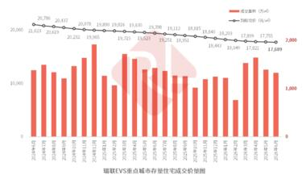
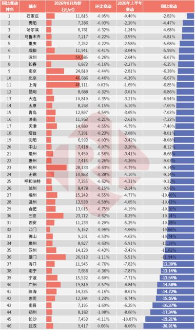
一句话核心： 全国重点城市二手房上半年均价跌 4.09%、同比跌 8.81%，跌势在放缓但没止住；中部强二线（武汉、长沙、郑州）跌得最惨，一线相对抗跌。
背景与关键数据： 瑞联（房价数据机构）统计的全国重点城市存量住宅（即二手房）加权均价：2026 上半年累计跌 4.09%、同比跌 8.81%；但月环比跌幅在收窄，说明下行趋势"明显放缓"。分化明显——上半年环比跌幅榜首：长沙 -10.87%、郑州 -8.60%、武汉 -8.06%、珠海 -8.01%、南宁 -7.87%；同比跌幅榜首：武汉 -20.01%、长沙 -19.21%、郑州 -17.34%、南昌 -16.37%、东莞 -15.05%（一年跌两成）。而上海（-1.69%）、重庆、深圳、南京等一线/强二线相对平稳。
图片解读： 第二张（post13_img2）是一张 46 城的明细表，列出各城市 2026 年 6 月均价（元/㎡）、环比变动、同比变动，并按同比跌幅从小到大排序、右侧用红/蓝色条形直观标注涨跌幅。表顶是石家庄（同比 -2.83%，相对抗跌），越往下跌幅越大，表底是武汉 -20.01%、郑州 -17.34%、长沙 -19.21% 等中部城市（蓝色长条向左，跌幅最深）；表中还能看到深圳约 5.08 万/㎡、上海约 4.61 万/㎡仍是价格高地。第一张（post13_img1）是配套的摘要卡片。表格的价值在于把"全国跌 4%"这个平均数背后的巨大城市分化摊开——有的城市几乎没跌，有的一年蒸发两成。
为什么重要 / 对市场和经济的含义： 房价是中国居民财富的最大载体（占家庭资产约六成），二手房价格连跌直接冲击"财富效应"——房子缩水，人们更不敢消费（呼应帖 9 手机低端崩塌、帖 1 央行要"稳预期"）。跌幅放缓是积极信号，但同比仍跌 8.81%、部分城市跌两成，说明底部尚未确认。城市分化揭示了核心逻辑：产业强、有人口和改善需求的一线/强二线更抗跌，产业空心、前期涨多的中部强二线跌得最狠。对政策：这正是央行例会（帖 1）要"托底下行风险"的现实背景。
延伸知识： "以价换量"是理解当前楼市的钥匙：卖方通过降价来促成交易，用价格的下跌换取成交量的维持。它说明市场处于买方市场——需求疲软，只能靠让价吸引买家。观察楼市见底，要同时看"价"和"量"：如果成交量先企稳、价格跌幅收窄，往往是筑底信号；若量价齐跌则仍在下行。另一个概念是"财富效应（wealth effect）"：资产（房产、股票）价格上涨会让人感觉更富有、更敢消费，下跌则相反。中国居民财富高度集中于房产，所以房价走势对消费的传导比股市更强——这也是为什么"稳房价"几乎等同于"稳消费、稳预期"。
帖 14 · 13:20 · 国信达：二手房挂牌价指数继续阴跌 #房价
帖子原文：
国信达：2026年第27周，全国二手房挂牌价指数环比下降0.14%，其中北京市挂牌价指数环比上涨0.12%，上海市挂牌价指数环比下降0.21%，广州市挂牌价指数环比下降0.64%，深圳市挂牌价指数环比下降0.48%。
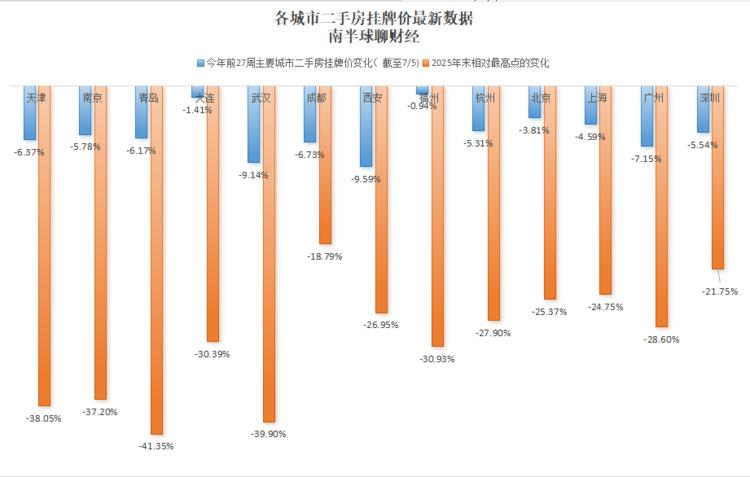
一句话核心： 第 27 周全国二手房挂牌价还在缓跌（-0.14%），一线里只有北京微涨，广深跌得相对多；从最高点算起，不少城市已腰斩式回撤三四成。
背景与关键数据： 国信达的全国二手房挂牌价指数（卖方挂出的报价，是需求的高频领先信号）。2026 年第 27 周（约 7 月初）：全国环比 -0.14%；一线分化——北京 +0.12%（唯一上涨）、上海 -0.21%、广州 -0.64%、深圳 -0.48%。挂牌价是"卖家想卖多少钱"，比成交价更早反映预期变化。
图片解读： 配图是"南半球聊财经"自己制作的柱状对比图"各城市二手房挂牌价最新数据"。每个城市两根柱：蓝色 = 今年前 27 周挂牌价变化（截至 7/5），橙色 = 2025 年末相对最高点的变化。看点在橙色（从峰值的累计回撤）触目惊心：青岛 -41.35%、武汉 -39.90%、天津 -38.05%、南京 -37.20%、福州 -30.93%、大连 -30.39% 都从高点跌去三到四成；相对"抗跌"的成都从峰值也跌 -18.79%，深圳 -21.75%，上海 -24.75%。蓝色柱（今年以来）跌幅温和得多（多在 -1% 到 -9%），说明大跌主要发生在过去两三年，今年跌速已明显放缓。
为什么重要 / 对市场和经济的含义： 这帖和帖 13 是一对——瑞联看"成交/存量均价"，国信达看"挂牌价"，互为印证：二手房价格仍在阴跌但斜率放缓。挂牌价作为高频领先指标，其边际企稳（今年跌幅远小于从峰值的累计跌幅）是筑底过程中的正面迹象。但从最高点跌三四成的现实，也解释了居民资产负债表受损、消费谨慎的根源。北京逆势微涨则再次印证"核心城市/核心资产更抗跌"的分化逻辑。这组房价数据是理解帖 1 央行"稳预期"、帖 9 内需疲软的底层背景。
延伸知识： 区分几个房价指标很重要：挂牌价（卖家报价，最高频、最领先，但含水分——挂高不一定卖得掉）、成交价（真实成交，滞后且样本少）、指数价（机构加权处理后的均价，平滑但可能被结构效应干扰）。三者中，挂牌价最能反映卖家心态变化，成交价最真实。看楼市要综合三者，别被单一数字带偏。另一个思维工具是"从峰值回撤（drawdown）"：只看"今年跌了多少"会低估伤害，因为很多下跌发生在更早；看"距最高点跌了多少"才知道持有者的真实浮亏和信心受损程度——这也是股票、任何资产评估风险的通用视角。
今日全图索引
| 帖号 | 时间 | 主题 | 标签 | 图片文件 |
|---|---|---|---|---|
| 1 | 15:14 | 央行二季度例会措辞转向，下半年宽松可期 | #金融 | post1_img1.jpg |
| 2 | 15:10 | IMF 最新全球增长预测（全球 3.0%、中国 4.6%） | #经济数据 | post2_img1.jpg |
| 3 | 15:09 | 盖洛普：美国人想生 2.7、实际生 1.6 | #其他国家经济 | post3_img1.jpg |
| 4 | 15:06 | 父母屏幕依赖伤害孩子依恋安全 | #心理学 | post4_img1.jpg, post4_img2.jpg |
| 5 | 15:01 | 人口弱化改写美国住房叙事 | #其他国家经济 | post5_img1.jpg |
| 6 | 14:51 | 美联储纪要偏鹰 + 消费信贷 8 个月首萎缩 | #其他国家经济 | post6_img1.jpg, post6_img2.jpg |
| 7 | 14:43 | 大摩 3Q26 大宗展望：看多铜/铀/黄金 | #金融 | post7_img1.jpg |
| 8 | 14:28 | 花旗：新西兰联储加息至 2.5%，空间有限 | #其他国家经济 | post8_img1.jpg |
| 9 | 14:16 | 伯恩斯坦：中国手机量弱价涨库存新高 | #经济数据 | post9_img1.jpg |
| 10 | 14:08 | 高盛：人民币在美元走强下仍具韧性 | #金融 | post10_img1.jpg, post10_img2.jpg |
| 11 | 13:52 | 特朗普重启对伊朗打击，霍尔木兹风险再起 | #金融 | post11_img1.jpg ~ post11_img9.jpg（共 9 张） |
| 12 | 13:28 | CBRE：上海写字楼空置率升至 24.5% | #经济数据 | post12_img1.jpg |
| 13 | 13:24 | 瑞联：上半年存量住宅均价累计跌 4.09% | #房价 | post13_img1.jpg, post13_img2.jpg |
| 14 | 13:20 | 国信达：二手房挂牌价指数继续阴跌 | #房价 | post14_img1.jpg |
说明：本报告图片均从已登录的知识星球页面提取原图（750px 宽），非截图。全部 26 张原图保存在
jason_images/2026-07-08/目录；正文引用已在成稿后转为 base64 内嵌，报告可单文件独立查看。